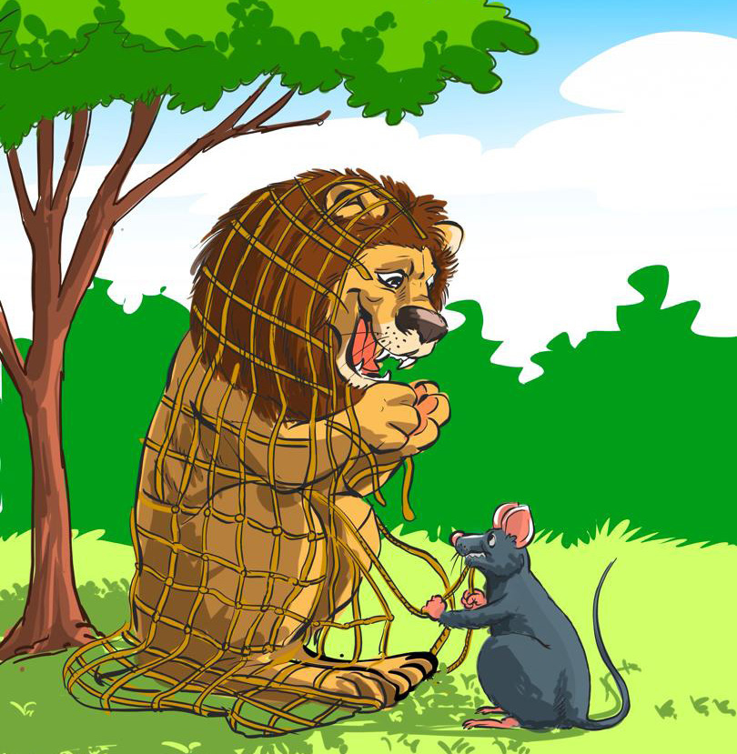

Kuandika hadithi fupi kwa mwandiko wa
kuungaZoezi la kumi
Andika hadithi ifuatayo kwa mwandiko wa kuunga:
Simba na Panya
Zoezi la kumiAndika hadithi ifuatayo kwa mwandiko wa kuunga:Simba na Panya

Simba amenaswa kwenye wavu huku panya akikaribia.
Hapo zamani za kale, palikuwa na Simba aliyeishi porini.
Siku moja, Simba alipata mlo mnono. Baada ya mlo,
akalala usingizi mzito chini ya mti. Ghafla, alitokea
Panya. Panya alianza kuuchezea mkia wa Simba. Mara,
Simba akaamka akiwa na hasira. Alimtafuta aliyekuwa
anamsumbua. Alimwona Panya, akamrukia, akamkamata
na kutaka kumla. Panya alimwomba Simba msamaha.
Kwa huruma, Simba alimsamehe Panya na kumwacha
aende zake. Panya alitimua mbio.
Siku iliyofuata, Simba alinaswa kwenye mtego uliotegwa
na mwindaji. Panya alisikia Simba akigumia kwa maumivu.
Panya alikuja na kuzichana nyavu hizo. Simba alitoka
salama, akamshukuru sana Panya kwa wema wake.
Hapo zamani za kale, palikuwa na Simba aliyeishi porini.
Siku moja, Simba alipata mlo mnono. Baada ya mlo,
akalala usingizi mzito chini ya mti. Ghafla, alitokea
Panya. Panya alianza kuuchezea mkia wa Simba. Mara,
Simba akaamka akiwa na hasira. Alimtafuta aliyekuwa
anamsumbua. Alimwona Panya, akamrukia, akamkamata
na kutaka kumla. Panya alimwomba Simba msamaha.
Kwa huruma, Simba alimsamehe Panya na kumwacha
aende zake. Panya alitimua mbio.
Siku iliyofuata, Simba alinaswa kwenye mtego uliotegwa
na mwindaji. Panya alisikia Simba akigumia kwa maumivu.
Panya alikuja na kuzichana nyavu hizo. Simba alitoka
salama, akamshukuru sana Panya kwa wema wake.
Hadithi hii imetafsiriwa na kuboreshwa kutoka English Short Story: Lion and Mouse ya Nasser Gorsi. Ilisomwa tarehe 29 Agosti 2024.